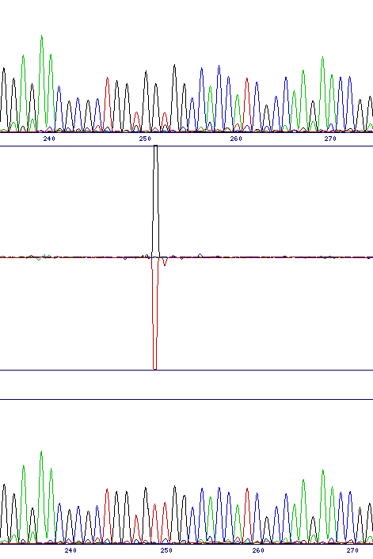
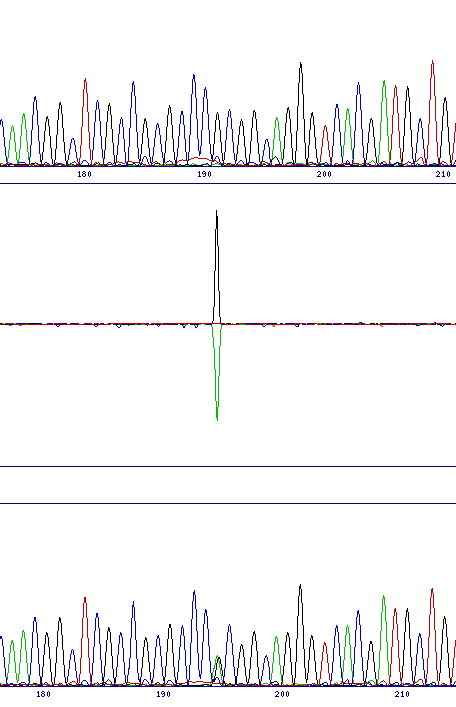
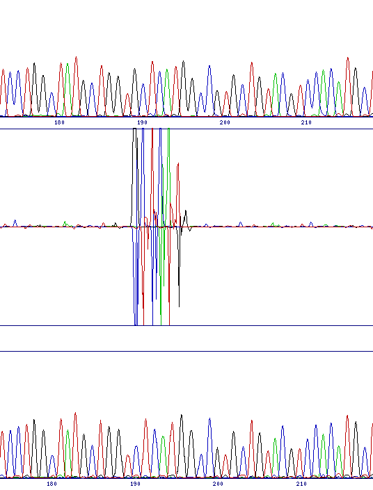

Interpretation of results from the chromatogram comparison is very simple, since the program highlights any differences between the two traces, and also automatically aligns the traces together with a difference profile in the output.
There are principally two classes of mutation which can be identified, base substitutions and frameshifts. The former would include either a direct substitution from one base to another or the identification of a polymorphism in the sequencing template, while the latter includes both insertion and deletion mutations. The two classes of mutation give different, but characteristic, output in the difference profile.
Base substitutions produce a single, typically bi-directional peak. This indicates the reduced intensity of one channel and the increase in the other. While polymorphic sites retain the original base peak as well as the new one, the height of that peak is generally significantly reduced, so a bi-directional peak is still observed.
Frameshifts cause the two sequence traces to go out of phase at the point of the mutation. Although the software will restore the alignment by altering the trace spacing, for about 7 or 8 bases there will be major differences between the two sequences because of the mis-alignment. The image below shows a deletion, however the insertion pattern is very similar.
| Direct substitution (G to T at 251) | Polymorphism (G to G/A at 191) | Deletion (G at 189) |
|---|---|---|
|  |  |  |